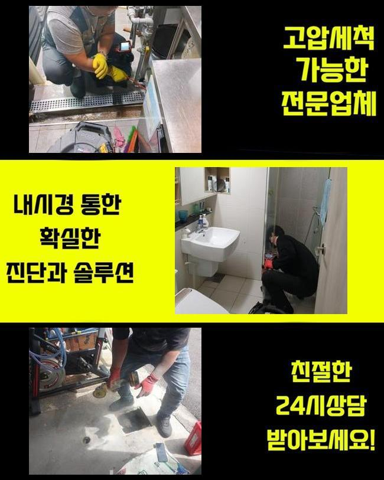
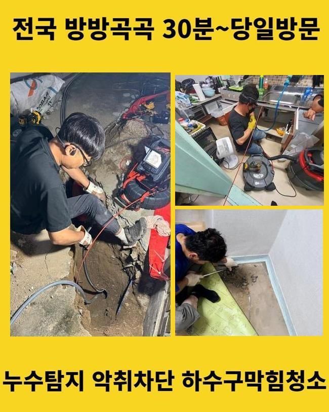
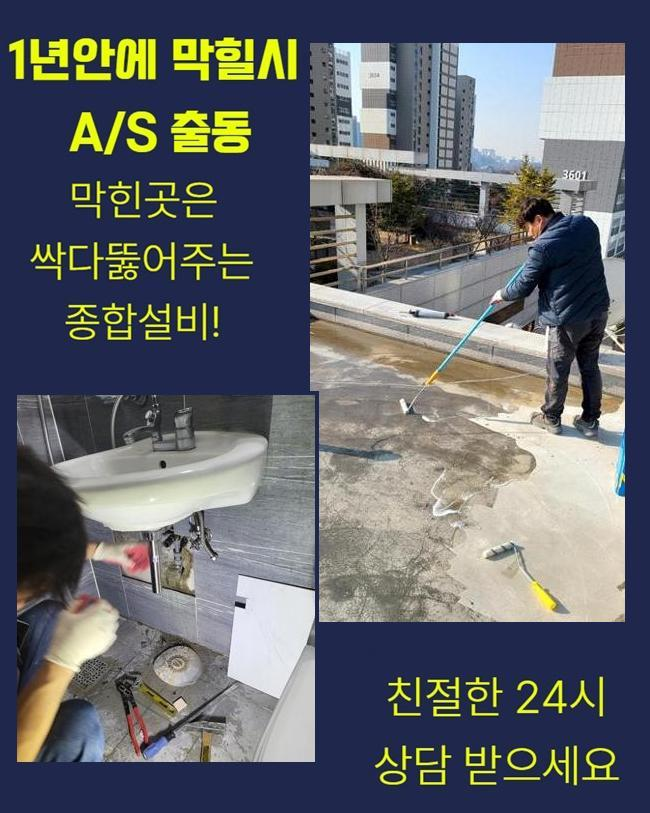
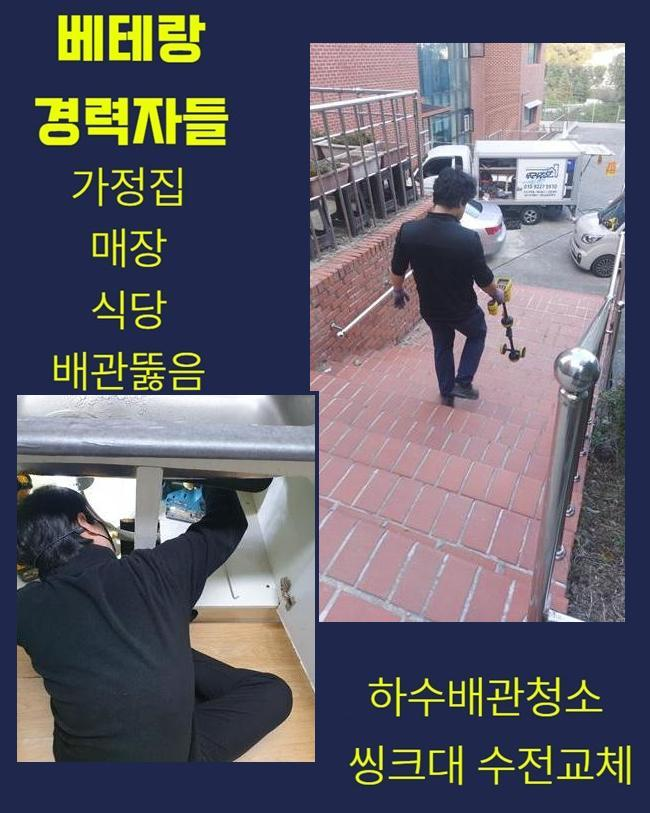
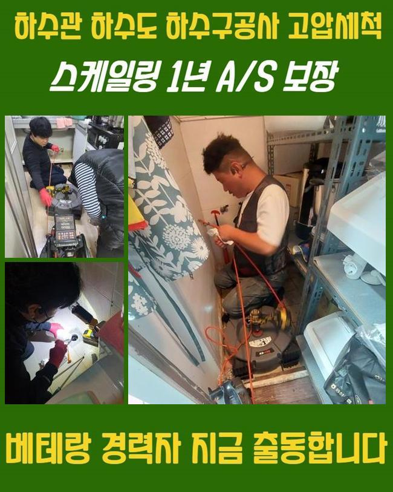
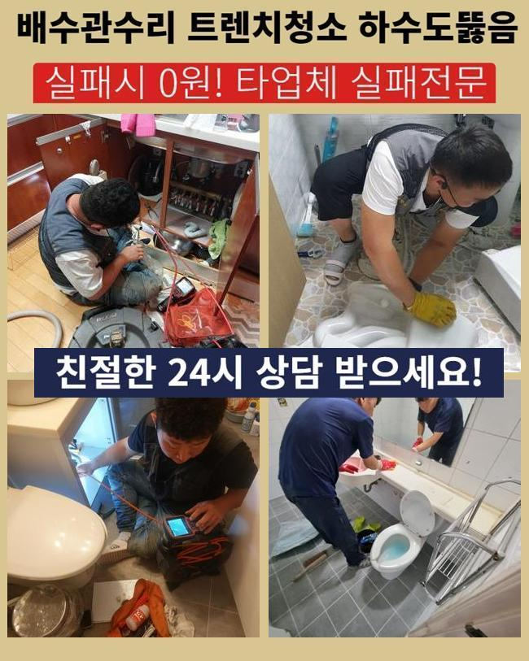
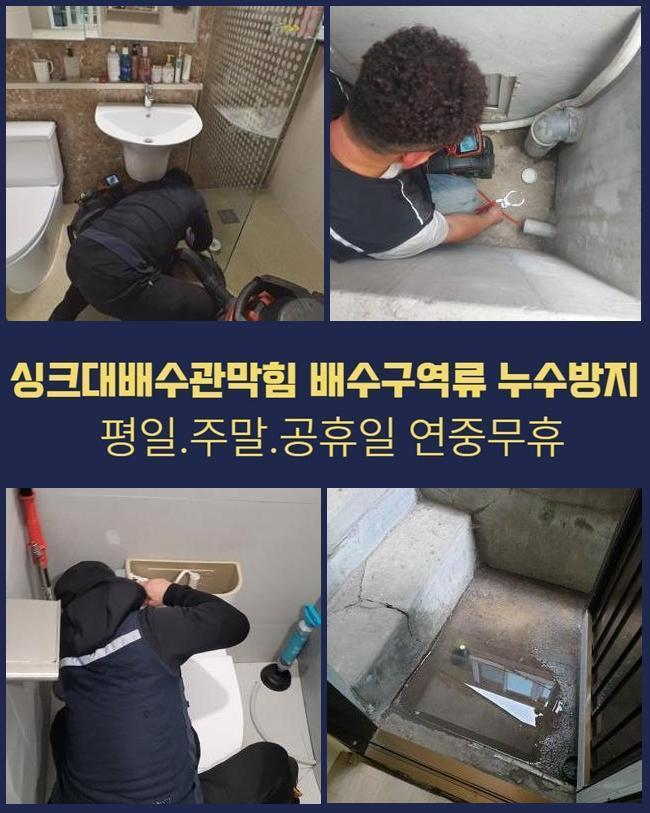

🏠 수성구 배관고압세척 하수구막힘가격 화장실변기뚫기 하수도뚫는기계
용인 변기막힘 전문 시공 후기

📋 작업 개요
- 위치: 용인
- 서비스 유형: 변기막힘, 하수구막힘, 배관막힘, 맨홀막힘, 뚫는업체, 배관청소, 고압세척
- 작업 일시: 2024. 11. 16. 10:55
- 업체명: 하수구수사대 (010-5615-2118)
🔍 문제 상황
수성구 배관고압세척 하수구막힘가격 화장실변기뚫기 하수도뚫는기계
거주지와 식당과 같은 업소들에서 통수가 불가능해 불편들을 토로하시는 장소가 자주 나타나게됩니다
상황의 양상에 따라서 영업에 불편들을 비롯해 다양한 손해들을 받았다면 조속한 조치가 수행되어야 하죠
일단은 향후 재발하는 문제가 발발하지 않도록 안정적인 수리가 이행되는 전문가들의 선별은 필수입니다
첫째로 산업시설에 위치하고 있는 식품관련 생산처였습니다
해당 지점의 관로들이 막히게되면서 육안으로도 심각하다고 생각하여 신속한 시정이 필요했습니다
깨끗한 위생요소가 갖춰져있어야 할 식품관련 작업장인 만큼 생산 시점의 중단과 함께 난항이 예측되었어요
청소를 신속히 이행시킬 생각으로 거시적으로 증상들을 세심히 확인했습니다
일전에 전문가가 내방하였으나 매립관로를 파악할 수 없어 작업에 실패했다고 하셨습니다

🔎 원인 분석
💡 전문가 진단: 정밀 진단 장비를 사용하여 슬러지의 고착 여부를 판명하고 타격/세척 작업을 실시했습니다.
도면자체도 오류 사항이 많았으나 우선적으로 메인배관의 부위를 찾기위하여 해결을 실시해주었어요
탐지기기로 가용해 해당 스팟을 정확히 짚고자 했어요
내시경 카메라를 꺼내서 하수관을 긴히 살펴 까닭을 확인해주었습니다
대체적으로 배수장애가 생기는 시점에는 식재료라던가 기름때 이런저런 잔해들이 침전되는 사례가 관찰되죠
이 현장도 마찬가지로 생각한대로 굳은 뒤 누적된 이물이 확인되었어요
평상시에 전문인들은 스프링장치나 석션으로 알려진 장비들을 운용해요
입구부분에 물길들만 확보하는게 가능하기때문에 딱딱한 이물은 제거될 수 없어요
이것으로 흡착물들과 강도높은 덩어리들을 안전하게 청소시켜주는 고압분사능력을 가지고있는 고수압기계의 이용으로 청소를 이어갑니다
오늘의 장소와같이 부지가 넓은 사업장에서는 피해범위도 일반적으로 큰 것이 사실입니다 이럴때 석션등으로 수습하는게 어려워 고수압방식을 실시하는 사례가 많아요
금일에는 차랑 이어져있는 고압 세척기를 꺼내서 각 라인에 고착되어있는 슬러지들을 탈거해내 깨끗히 제거했어요

🔧 작업 과정
고압을 통한 방법으로 이물들을 제거하고 심층부까지 작업해주었어요
수리 후에는 세척된 자리를 내시경 촬영을 이용해서 검수했죠
의뢰인분께도 전후의 모습을 제대로 확인시켜드릴 목적으로 검수는 동반하는걸 우선하고 있죠
이후의 방문드린 장소는 상업용도 건축물 맨홀에서 솟구치는 증상이 보여졌죠
오수맨홀의 경우 중요성이 커서 안정적인 처리가 필요했는데요
맨홀쪽부터 도로쪽 하수관까지 두루두루 내시경기기로 체크해봤습니다
확인하니 며칠 사이라기보단 오래도록 누적된 고착물이 관찰되는 현장 주위의 심각성을 파악했습니다
검수를 마치고서는 적합한 기기를 꺼내어 청소를 시작하였습니다
고압기기로 내부에 침전된 대량의 기름성분들을 제거시켰습니다
청소뒤엔 내시경장치를 꺼내어 빈틈없이 세척된 모습들을 체크했습니다
예고없이 생겨날지 모르는 문제들로 난감함을 겪으셨을 고객분을 위해 늦게라도 방문 및 해결을 속행해 드립니다
상가처럼 이동자체가 빈번한 장소에선 문제증상이 발생될 때, 다급할 수 밖에 없을텐데요
금일엔 내시경기기로 점검을 한 후 흡착물들도 제거시키기위해 샤프트기를 이용했어요
이후의 현장도 배관컨디션 복구를 위하여 타겟으로 한 고압 세척을 이어갔습니다
작업 시 먼저 핵심은 내시경 카메라를 꺼내어 증상의 시작인 지점들을 조속히 특정하는거죠
내시경장치를 쓰지않는다면 증세의 기조가되는점이 어떤라인에 존재하는지 알기 힘들어 전문진 모색 시 내시경기기의 구비를 필수로 물어보시길 바랍니다


✅ 작업 완료
증상들이 나타났을 경우 기름들과 오염원을 제거해주는건 배수관 전문가들의 대처가 안정적이고 셀프적인 방법들도 옳지 않다 할 수 없으나 예상치못하게 문제의 경중이 최악으로 치닫기에 꼭 전문업체를 찾으시는게 비용을 따져봐도 합리적일 수 있어요
장소를 가리지않고 요청하시는 장소서 작업한 다음 AS 기한 일년간 책임져 염려할 일 없죠
이물이 제거되었는지 내시경장비를 공유하여 실시하는 절차를 속행할 것을 보여드릴게요
궁금하신 부분이 있다면 편히 여쭈시면 응당 말씀드릴게요




⚠️ 하수구 배관 막힘 예방 및 관리 가이드
- ✅ 머리카락, 비닐, 물티슈 등 물에 분해되지 않는 이물질은 하수구 유입을 절대 금지해 주세요.
- ✅ 하수구 거름망을 씌우고 모여진 이물질은 주기적으로 쓰레기통에 바로 비워주셔야 합니다.
- ✅ 배관 노후가 심할 경우 이물질이 더 쉽게 걸리므로 주기적인 배관 세척(고압세척 등)을 권장합니다.
- ✅ 작업 후 1년 이내 재발 시 하수구수사대에서 무상 A/S 보증 서비스를 제공합니다.
💡 핵심 정리
- 확실한 장비 작업(내시경 점검 및 샤프트 스케일링)으로 원인을 뿌리 뽑습니다.
- 작업 후 1년 이내에 동일한 부위 재발 시 100% 무상 A/S 서비스를 보장합니다.
- 서울 · 경기 · 인천 전 지역에 24시간 언제든 긴급 출동할 수 있도록 항시 대기 중입니다.
❓ 자주 묻는 질문 (FAQ)
🚨 용인 변기막힘 문제로 고민이신가요?
정확한 원인 진단과 확실한 시공으로 재발 없는 해결을 약속드립니다.
24시간 긴급 출동 | 서울 · 경기 · 인천 전지역 | 1년 내 재발 시 무상 A/S